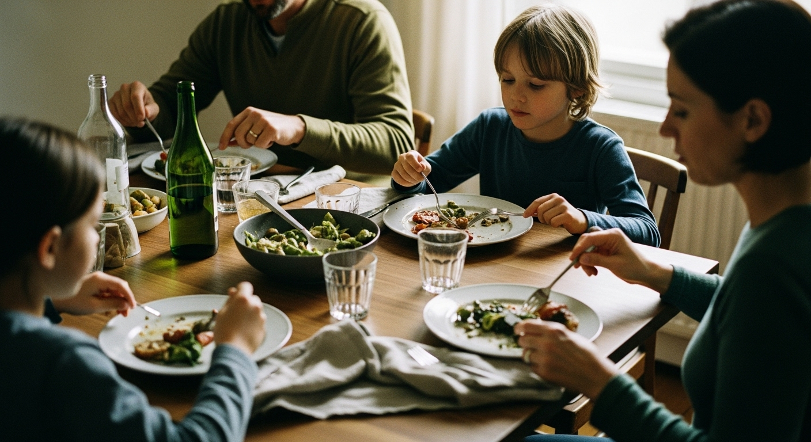

About
We started with a question.
It was 5pm on a Tuesday. Three of us were standing in the kitchen. Nobody had decided what was for dinner. Again.

It was 5pm on a Tuesday. Three of us were standing in the kitchen. Nobody had decided what was for dinner. Again.
FamilyTable started, like a lot of small frustrations turned into projects, on a kitchen counter. Three flatmates, six bookmarked recipes between them, no shared list, and a fridge full of ingredients that didn't add up to a single meal.
We tried Notion. We tried a Google Sheet. We tried the notes app, the back of an envelope, and one ill-fated month of "let's just text each other." None of it worked, because none of it understood that meal planning isn't a project — it's the same small loop, repeating every week, for the rest of your life.
Collect, plan, shop. Collect, plan, shop.
So we built a tool that does just those three things, and does them well enough that you stop thinking about them. That's the whole pitch.
If a feature only impresses other product designers, it doesn't ship. The benchmark is whether it helps a tired person at 5:42pm.
Most apps optimise for one person. Real meals involve at least two. Every feature is built around shared state.
No badges. No streaks. No "you haven't planned this week!" notifications. The app waits for you, not the other way around.
Your recipes are your recipes. We export them, we don't train on them, and we don't lock you in.
We're a small, distributed team — Bristol, Berlin, Lisbon. Most of us cook for someone other than ourselves, which is, we think, the only real qualification.
Cooks for a family of four. Believes in lentils.
Lives with a baker. Owns 14 forms of flour.
Has strong opinions about white space and rice.
Fixes the unit-merging bugs nobody else wants to.
Once meal-planned for 22 people for a wedding. Fine.
Personally answers every "where's my recipe?" email.
